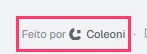
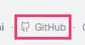
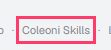
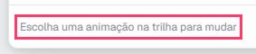
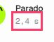
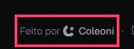
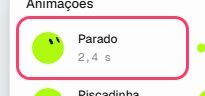

blob.coleoni.com 2 páginas
Corrigir primeiro agrupado por regra, o mais grave no topo
- Os elementos devem ter contraste de cor suficienteImpede o uso
Certifique-se de que o contraste entre as cores de primeiro plano e de fundo atenda aos limites de relação de contraste WCAG 2 AA
1.4.3 Contraste (mínimo) AAeMAG 4.18 elementos em /pt/, /
.gap-\[0\.25em\] 
footer > a[target="_blank"][rel="noopener noreferrer"] 
a[rel="noopener"][href$="pt/"]:nth-child(5) Como corrigirO elemento tem contraste insuficiente no valor de 3.03 (cor do primeiro plano: #898c92, cor de fundo: #f2f3f5, tamanho da fonte: 8.3pt (11px), normal/negrito: normal). Contraste esperado no valor de 4.5:1 Detalhes - Todo o conteúdo da página deve estar contido em regiões (landmarks)A corrigir
Certifique-se de todo o conteúdo da página esteja contido em regiões (landmarks)
eMAG 1.8best practice2 elementos em /pt/, /
h1 
h1 Como corrigirAlgum conteúdo da página não está contido em regiões (landmarks) Detalhes - Sem link de pular conteúdoVale olhar
A primeira parada do Tab não é um link pro conteúdo principal, então quem usa teclado passa pelo menu inteiro em toda página.
2.4.1 Ignorar blocos AeMAG 1.52 elementos em /pt/, /a https://coleoni.com/pt “Coleoni” · a https://coleoni.com “Coleoni”Como corrigirAdicione “Ir para o conteúdo” como primeiro elemento focável, apontando pra <main id="conteudo">. O eMAG pede isso na recomendação 1.5.
Achado à mão estados que o script não abre: o modo Animar, o tema escuro, o Sortear
- O cinza claro falha no modo Animar e no tema escuroImpede o uso
O script lê cada página como ela abre, no tema claro. No modo Animar, a linha do tempo, as durações e as dicas usam #898c92 sobre #fdfdfe (3,31:1); no tema escuro, o rodapé é #696c71 sobre #0a0b0d (3,73:1). Os dois ficam abaixo de 4,5:1, em 11 a 13px. Quem tem baixa visão, ou está no celular debaixo do sol, perde esses textos.
1.4.3 Contraste (mínimo) AAeMAG 4.190 elementos em /pt/, /
Animar · dica embaixo da trilha 
Animar · duração 
tema escuro · rodapé Como corrigirUm token resolve todos os usos: --pulse-foreground-subtle, em src/styles.css. No tema claro, oklch(0.64 0.01 260) dá de 3,0 a 3,3:1; oklch(0.53 0.01 260) dá 4,75:1 ou mais. No escuro, oklch(0.53 0.008 260) dá 3,7:1; oklch(0.64 0.008 260) dá 5:1 ou mais. Os dois temas só trocam os valores entre si. - Os botões de animação deixam a duração fora do nomeVale olhar
Cada botão da lista de animações mostra “Parado 2,4 s” e se chama “Adicionar Parado no fim. Uma vez no ciclo”. O axe marca como grave; à mão é pouco, porque o controle por voz ainda acha o botão por “Parado”. Mesmo assim, o nome devia começar pelo que está escrito.
2.5.3 Rótulo no nome AeMAG 6.228 elementos em /pt/, /
Animar · lista de animações Como corrigirComece o aria-label pelo texto visível (“Parado, 2,4 s: adicionar no fim, uma vez no ciclo”), ou deixe o texto visível como nome e passe o resto pro aria-describedby. - O Sortear troca o blob em silêncioVale olhar
O blob em si está bem descrito (“Seu blob: círculo lima, neutro”). Mas o Sortear, ou a tecla R, troca por outro e a área de status fica quieta: quem usa leitor de tela precisa voltar até a imagem pra saber o que veio.
4.1.3 Mensagens de status AAeMAG 2.22 elementos em /pt/, /
o palco · role=img Como corrigirMande o rótulo novo pra área role="status" que já avisa quando o link é copiado, por exemplo “Seu blob: seixo lima, atento”.
Também conferido à mão, e ok: menus e diálogos abrem com Enter, fecham com Esc e devolvem o foco; abas e grades de opção andam pelas setas; todo controle dos dois modos tem nome; o blob é uma imagem com rótulo que acompanha cada mudança; nada se mexe com o movimento reduzido ligado; as duas páginas declaram o idioma.
Teclado
| Paradas do Tab | Link de pular conteúdo | Sem foco visível | Foco em elementos escondidos | Teclado preso | |
|---|---|---|---|---|---|
/pt/ | 27 | não | 0 | 0 | não |
/ | 27 | não | 0 | 0 | não |
Ainda conferir à mão
- Ouça a página com leitor de tela (NVDA, VoiceOver, TalkBack): a ordem faz sentido?
- O texto alternativo diz o que a imagem significa ali, não como ela é.
- Vídeos têm legenda; áudios têm transcrição.
- Erros de formulário dizem o que deu errado e como corrigir, do lado do campo.
- Zoom em 200%: nada cortado, nada sobreposto.
- Tudo o que funciona com o mouse funciona com o teclado.
Testes automáticos acham parte dos problemas. O resto precisa da conferência manual acima. A Lei Brasileira de Inclusão (Lei 13.146/2015, art. 63) exige acessibilidade nos sites de empresas com sede ou representação no Brasil e de órgãos públicos.
Cada página


Feito por /coleoni-a11y · skills.coleoni.com